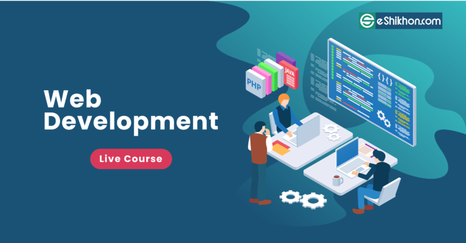
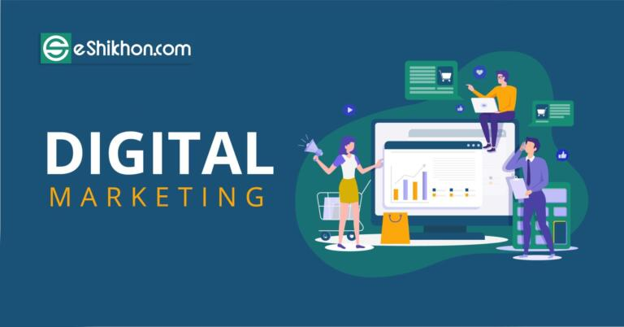

Eshikhon Online Courses

ওয়েব ডেভেলপমেন্ট হল বিভিন্ন কোম্পানির জন্য ওয়েবসাইট তৈরি করা। আমরা বিভিন্ন কোম্পানির ওয়েবসাইট ভিজিট করে বিভিন্ন তথ্য এবং সেবা নিয়ে থাকি। যেমন ফেসবুকের মাধ্যমে বন্ধু বানানো, বিক্রয়.কম এর মাধ্যমে জিনিসপত্র বিক্রি, ডারাজের মাধ্যমে জিনিস কেনা এবং ইশিখন.কম এর মাধ্যমে প্রশিক্ষণ নেওয়া।
অনলাইন দুনিয়া আসার সাথে সাথে প্রতিটি কোম্পানি উপলদ্ধি করেছে, নিজেদের একটি ওয়েবসাইট দরকার। নতুন ওয়েবসাইট তৈরি তথা পুরানো ওয়েব ওয়েবসাইটের নতুন ডিজাইন আপডেট ইত্যাদি, নতুন নতুন আইডিয়া দিয়ে বিভিন্ন ওয়েবসাইট তৈরি করা, ইত্যাদি প্রচুর কাজ রয়েছে ওয়েব ডেভেলপমেন্টে। কিন্তু সেই তুলনায় এই সেক্টরে দক্ষ লোকের অভাব রয়েছে। আপনারা যারা সায়েন্স থেকে পড়াশুনা করেছেন, ম্যাথ, ইংলিশ ইত্যাদি ভালো দক্ষতা। তারা আমাদের ওয়েব ডেভেলপমেন্ট দিয়ে নিজের ক্যারিয়ার শুরু করতে পারেন। ওয়েব ডেভেলপমেন্ট করে আপনি যেকোন সফটওয়্যার তথা আইটি কোম্পানিতে ওয়েব ডেভেলপার হিসেবে কাজ করতে পারেন। অনলাইনে ঘরে বসেই যেকোন...
আরও পড়ুন
 ওয়েব ডিজাইন হল ওয়েবসাইটকে ডিজাইন করা। ইশিখনে ওয়েব ডিজাইন এবং ওয়েব ডেভেলপমেন্ট ২টা কোর্স রয়েছে। এখন অনেকেই প্রশ্ন করতে পারেন। কোনটা শিখব বা ২টার মধ্যে পার্থক্য কি? ওয়েবসাইট ডেভেলপমেন্টে দুটি পর্ব থাকে একটা হল ফ্রন্ট ইন্ড অন্যটা ব্যাক ইন্ড ডেভেলপমেন্ট। সাধারণত যারা ব্যাক ইন্ড ডেভেলপমেন্ট করেন, উনাদের ডেভেলপার বলা হয়। আর যারা ফ্রন্ট ইন্ড ডেভেলপমেন্ট করেন, তাদের ডিজাইনার বলা হয়।
একটা ওয়েবসাইটের ডাটাবেইজ ডিজাইন, ফাংশনালিটি, ইউজার লগিন চেক, ইত্যাদি কাজগুলো ডেভেলপার তথা ওয়েব ডেভেলপমেন্ট এর কাজ। আর একটা ওয়েবসাইট দেখতে কেমন হবে, কোনটা কোথায় কিভাবে রাখলে সুন্দর দেখাবে, কোথায় কোন কালারটা ব্যবহার করলে সাইটটি ইউজার ফ্রেন্ডলি হবে ইত্যঅদি হল ফ্রন্ট ইন্ড এর কাজ। অন্য কথায় বলা যায়, স্ট্যাটিক কাজগুলো সাধারণত ওয়েব ডিজাইনাররা করে থাকেন। আর ডাইনামিক কাজগুলো ডেভেলপার করে...
ওয়েব ডিজাইন হল ওয়েবসাইটকে ডিজাইন করা। ইশিখনে ওয়েব ডিজাইন এবং ওয়েব ডেভেলপমেন্ট ২টা কোর্স রয়েছে। এখন অনেকেই প্রশ্ন করতে পারেন। কোনটা শিখব বা ২টার মধ্যে পার্থক্য কি? ওয়েবসাইট ডেভেলপমেন্টে দুটি পর্ব থাকে একটা হল ফ্রন্ট ইন্ড অন্যটা ব্যাক ইন্ড ডেভেলপমেন্ট। সাধারণত যারা ব্যাক ইন্ড ডেভেলপমেন্ট করেন, উনাদের ডেভেলপার বলা হয়। আর যারা ফ্রন্ট ইন্ড ডেভেলপমেন্ট করেন, তাদের ডিজাইনার বলা হয়।
একটা ওয়েবসাইটের ডাটাবেইজ ডিজাইন, ফাংশনালিটি, ইউজার লগিন চেক, ইত্যাদি কাজগুলো ডেভেলপার তথা ওয়েব ডেভেলপমেন্ট এর কাজ। আর একটা ওয়েবসাইট দেখতে কেমন হবে, কোনটা কোথায় কিভাবে রাখলে সুন্দর দেখাবে, কোথায় কোন কালারটা ব্যবহার করলে সাইটটি ইউজার ফ্রেন্ডলি হবে ইত্যঅদি হল ফ্রন্ট ইন্ড এর কাজ। অন্য কথায় বলা যায়, স্ট্যাটিক কাজগুলো সাধারণত ওয়েব ডিজাইনাররা করে থাকেন। আর ডাইনামিক কাজগুলো ডেভেলপার করে...
আরও পড়ুন
Graphic Design |ভাল ডিজাইনের জন্য গ্রাফিক ডিজাইন আইডিয়া, রঙ এবং টাইপোগ্রাফি জানুন এবং প্রয়োগ কর! আপনি কি আপনার গ্রাফিক ডিজাইন স্কিল নিয়ে হতাশ হয়েছেন, বা ভাবছেন কিভাবে গ্রাফিক ডিজাইনাররা এত সুন্দর প্রফেশনাল আর ইফেক্টিভ ডিজাইন তৈরি করে? অথবা আপনি কেবল গ্রাফিক ডিজাইন সম্পর্কে আরও জানতে চান বা একটি গ্রাফিক ডিজাইনার হিসাবে শুরু করতে চান?
তাহলে এই কোর্সটি আপনার জন্য। এখানে বেসিক থেকে শুরু করে প্রজেক্টভিত্তিক প্রতিটি এডভ্যান্স ডিজাইন শেখানো হবে। এর আগে গ্রাফিক্স শুধুমাত্র প্রিন্টিং এর মধ্যে সীমাবদ্ধ থাকলেও ইন্টারনেট আসার পর এর চাহিদা কয়েকগুণ বেড়ে গেছে। বর্তমানে সব কম্পানিরই ওয়েবসাইট, ফেসবুক পেইজ, ইউটিউব চ্যানেল ইত্যাদি রয়েছে। ওয়েবসাইটের লোগো, ব্যানার, ফেসবুক পেজের পোস্ট, কভার ফটো, ও প্রচারণার জন্য ব্যনার ডিজাইন এবং ইউটিউব থাম্বনেইল এর জন্য সব কম্পানিই এখন গ্রাফিক ডিজাইনার নিয়োগ দিয়ে থাকেন।....
আরও পড়ুন
এসইও, যার পুরো নাম সার্চ ইঞ্জিন অপ্টিমাইজেশন। সার্চ ইঞ্জিন বলা হয় যেসকল সাইটের মাধ্যমে আমরা ওয়েবসাইটে বিভিন্ন তথ্য খুঁজি সেগুলোকে। যেমন গুগল, বিং ইত্যাদি। যেমন আমরা অনলাইন কোর্স দিয়ে যদি গুগলে সার্চ করি, তাহলে কি আসবে? আসবে যে, বাংলাদেশ থেকে যেসকল কম্পানি অনলাইন কোর্স করিয়ে থাকে তাদের তথ্য। এখন বাংলাদেশে অনেকগুলো কম্পানি আছ যারা অনলাইন কোর্স করিয়ে থাকে, তাহলে গুগল কাদেরকে প্রথমে নিয়ে আসবে। এর জন্য যা করতে হবে, যেভাবে গুগলে প্রথম পাতায় আসা যায় এটাই হল সার্চ ইঞ্জিন অপ্টিমাইজেশন। ডিজিটাল মার্কেটিং এর মাতা বলা হয় সার্চ ইঞ্জিনকে। কারণ মাধ্যমে একটা কম্পানি ঠিক যেই কাস্টমার চায় তাদেরকেই ডাইরেক্টলি পেয়ে থাকেন। প্রতিদিন যদি বাংলাদেশ থেকে ৫,০০০ লোক অনলাইন আয় লিখে গুগল সার্চ করে তাহলে কোন প্রকার লিফলেট ব্যানার ছাড়াই কোন কম্পানি তার নির্দিষ্ট গ্রাহকের কাছে...
আরও পড়ুন

লিফলেট, ব্যানার, ফেস্টুন এর যুগ শেষে এখন হল ডিজিটাল মার্কেটিং কিংবা অনলাইন মার্কেটিং এর যুগ। অনলাইন মার্কেটিং এর মাধ্যমে এনালগ মার্কেটিং এর চেয়ে ১০ গুণের বেশি কম খরচে আপনি দীর্ঘস্থায়ী প্রচারনার সুযোগ পাচ্ছেন। এজন্য সম্প্রতি যেসব কম্পানি এনালগ মার্কেটিং এ সফলতা পাচ্ছেন না, ডিজিটাল মার্কেটিং এর মাধ্যমে তারা আজ সফল। ডিজিটাল মার্কেটিং হল ইলেকট্রনিক মিডিয়ার মাধ্যমে পণ্য বা ব্র্যান্ডের প্রচারকে বোঝায়। যেমন- ওয়েবসাইট, এস ই ও (সার্চ ইঞ্জিন অপটিমাইজেশন), ইন্টারনেট ব্যানার অ্যাড, ইমেইল মার্কেটিং, ভিডিও মার্কেটিং, পে পার ক্লিক (PPC) মার্কেটিং, সোশ্যাল মিডিয়া মার্কেটিং (Facebook, Twitter, LinkedIn, etc.), মোবাইল মার্কেটিং (SMS, MMS, etc.) ইত্যাদির মাধ্যমে নিজের পণ্য বা ব্র্যান্ডের প্রচার।
ডিজিটাল মার্কেটিং হল ....
আরও পড়ুন